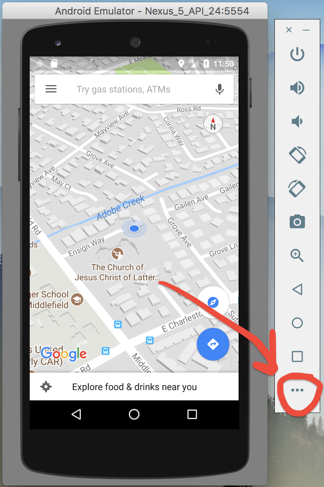
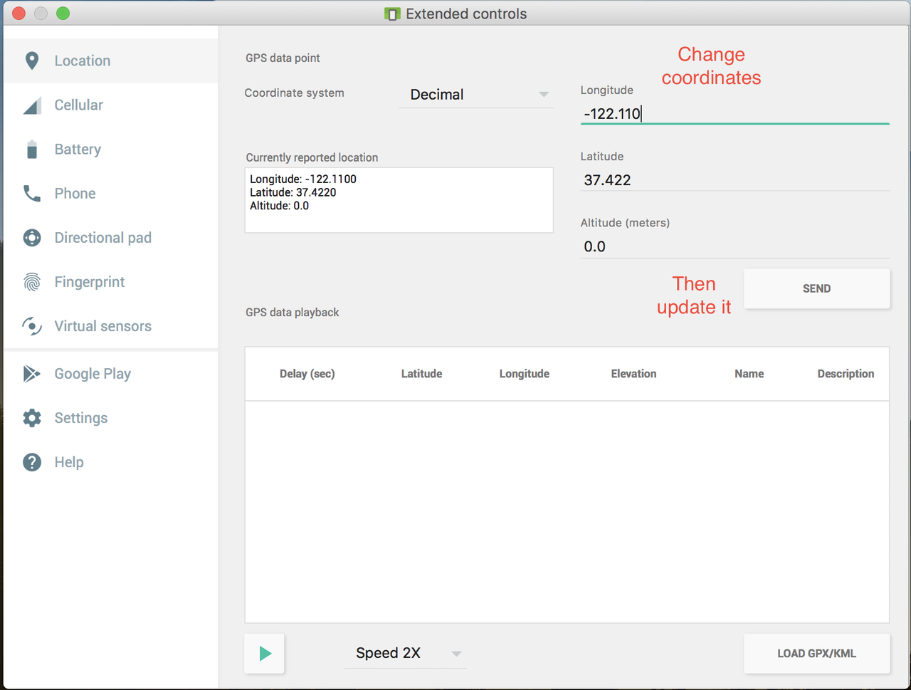
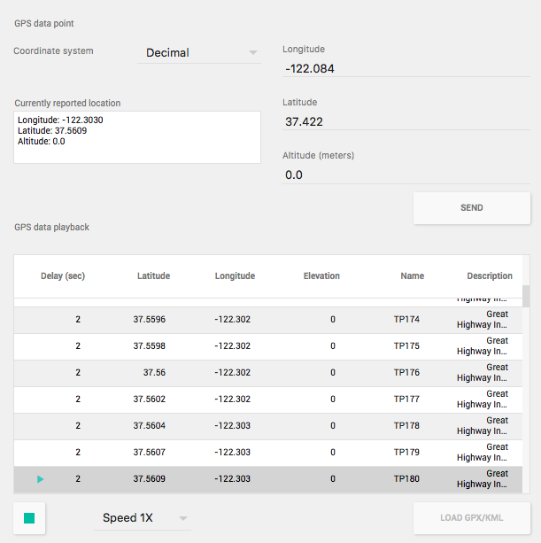

How to emulate GPS location in the Android Emulator?
I want to get longitude and latitude in Android emulator for testing.
Can any one guide me how to achieve this?
How do I set the location of the emulator to a test position?
Answer
You can connect to the Emulator via Telnet. You then have a Emulator console that lets you enter certain data like geo fixes, network etc.
How to use the console is extensively explained here. To connect to the console open a command line and type
telnet localhost 5554
You then can use the geo command to set a latitude, longitude and if needed altitude on the device that is passed to all programs using the gps location provider. See the link above for further instructions.
The specific command to run in the console is
geo fix <longitude value> <latitude value>
I found this site useful for finding a realistic lat/lng: http://itouchmap.com/latlong.html
If you need more then one coordinate you can use a kml file with a route as well it is a little bit described in this article. I can't find a better source at the moment.
Suggest
No one here mentioned the built in solution of the emulator itself, so for future visitors, I'd like to share it with visuals.
First, run your Android Emulator and click on the menu button (3 dots) shown below:

Then from the left pane, select Location and change the coordinates according to your needs. After pressing Send button, changes will immediately take effect (I recommend you to open up Google Maps for better understanding).

Android Studio Version: 2.3.3
In addition, to make your different locations coming to your application in real time, you can use GPX file. It's very easy to create this file from Google Map direction link:
- Go to google map, choose a location, then press "Directions" and enter the second location.
- After route is created, copy a link from the browser
- Go to this website: https://mapstogpx.com and paste the link to "Let's Go" box
- Press the "Let's Go" button and GPX file will be downloaded
Use "Load GPS/KML" button to load the created file to your emulator, choose speed, and press green play button on the bottom. Locations will be sent in real time as shown on the picture below.
